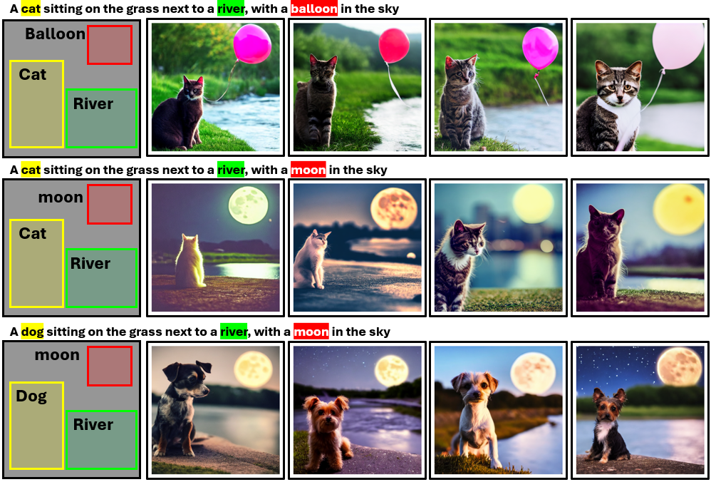
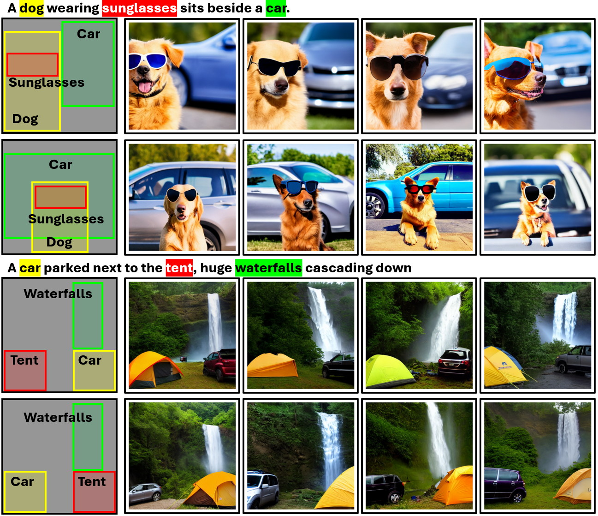
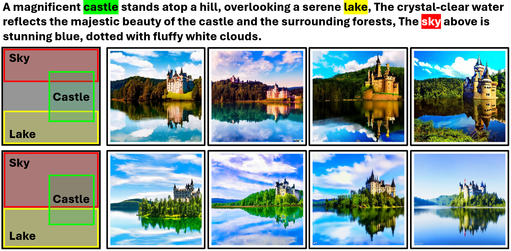

Text-to-image diffusion models allow users control over the content of generated images. Still, text-to-image generation occasionally leads to generation failure requiring users to generate dozens of images under the same text prompt before they obtain a satisfying result.
We formulate the lottery ticket hypothesis in denoising: randomly initialized Gaussian noise images contain special pixel blocks (winning tickets) that naturally tend to be denoised into specific content independently. The generation failure in standard text-to-image synthesis is caused by the gap between optimal and actual spatial distribution of winning tickets in initial noisy images. To this end, we implement semantic-driven initial image construction creating initial noise from known winning tickets for each concept mentioned in the prompt.
We conduct a series of experiments that verify the properties of winning tickets and demonstrate their generalizability across images and prompts. Our results show that aggregating winning tickets into the initial noise image effectively induce the model to generate the specified object at the corresponding location.
Some text
Some text
Some text
  Progressive Encoding for Neural Optimization introduces an idea similar to our windowed position encoding for coarse-to-fine optimization.
@article{mao2024theLottery,
author = {Jiafeng Mao, Xueting Wang and Kiyoharu Aizawa},
title = {The Lottery Ticket Hypothesis in Denoising: Towards Semantic-Driven Initialization},
journal = {ECCV},
year = {2024},
}